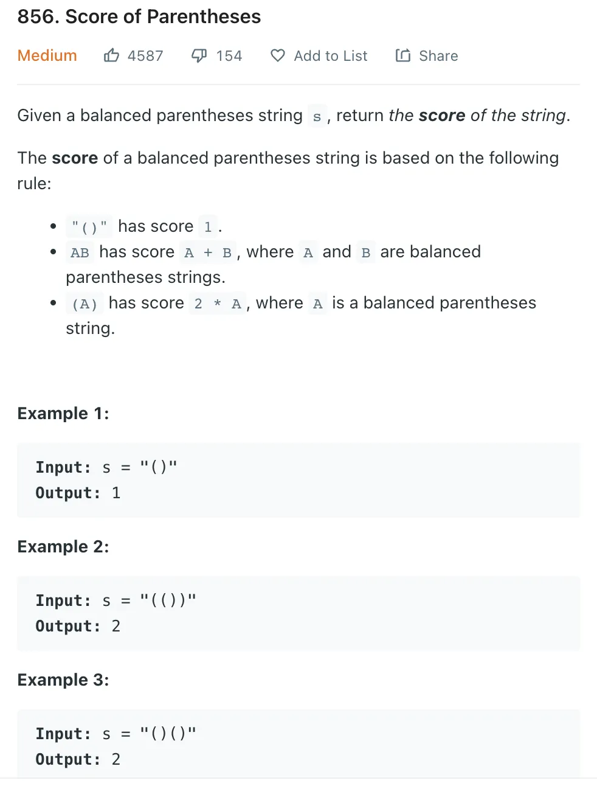
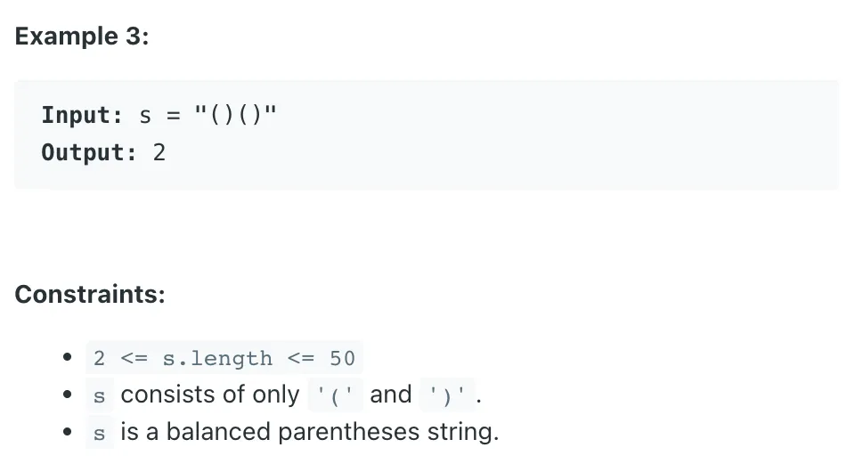

856. Score of Parentheses
考過的公司：Asked by: tiktok
Question


✍🏽 My Solution
Runtime: 1 ms, faster than 77.61% of Java online submissions for Score of Parentheses. Memory Usage: 42 MB, less than 47.84% of Java online submissions for Score of Parentheses.
class Solution {
public int scoreOfParentheses(String s) {
int cur = 0;
Stack<Integer> stack = new Stack<>();
for (int i = 0; i < s.length(); i++) {
if (s.charAt(i) == '(') {
stack.push(cur);
cur = 0;
} else {
if (cur != 0) {
cur *= 2;
} else {
cur = 1;
}
cur += stack.pop();
}
}
return cur;
}
}
Solution #1 [Stack]
Runtime: 1 ms, faster than 77.67% of Java online submissions for Score of Parentheses. Memory Usage: 42.7 MB, less than 6.37% of Java online submissions for Score of Parentheses.
class Solution {
public int scoreOfParentheses(String s) {
Stack<Integer> stack = new Stack<>();
int cur = 0;
for (Character c : s.toCharArray()) {
if (c == '(') {
stack.push(cur);
cur = 0;
} else {
cur = stack.pop() + Math.max(2 * cur, 1);
}
}
return cur;
}
}
Explanation (in my words)
- How does their solution work?
- 遍历字符串S，当遇到左括号时，将当前的分数压入栈中，并把当前得分清0，若遇到的是右括号，说明此时已经形成了一个完整的合法的括号字符串了，而且除去外层的括号，内层的得分已经算出来了，就是当前的结果 res，此时就要乘以2，并且要跟1比较，取二者中的较大值。然后还要加上栈顶的值
- 因为栈顶的值是之前合法括号子串的值，跟当前的是并列关系，所以是相加的操作，最后不要忘了要将栈顶元素移除即可
- What is the space/time complexity of their solution?
- time O(n)
- space O(n)
Solution #2 [space O(1)]
Runtime: 0 ms, faster than 100.00% of Java online submissions for Score of Parentheses.
Memory Usage: 41.4 MB, less than 80.38% of Java online submissions for Score of Parentheses.
class Solution {
public int scoreOfParentheses(String s) {
int score = 0;
int depth = 0;
for (int i = 0; i < s.length(); i++) {
if (s.charAt(i) == '(') {
depth++;
} else {
depth--;
}
if (s.charAt(i) == ')' && s.charAt(i - 1) == '(') {
// Whenever you meet a () pair, you multiply 1 by all the 2 outside of it, and accumulate the result
score += Math.pow(2, depth);
}
}
return score;
}
}
Explanation (in my words)
- How does their solution work?
- 我們可以在每次遇到
(時把深度 + 1，在遇到)時把深度 - 1。而唯一需要計算分數時，就是前一個字元剛好為(的情況，所以我宣告了一個 bool 值在遇到(為真、遇到)為假，這樣一來就可以在前一字元為(時使用深度計算分數。 - 比方說
(())我們只有在碰到第一個)時才會計算，而此時的深度為 1，分數的計算公式是 2^1=2。 - 比方說
((()))我們同樣是在碰到第一個 ) 時才會計算，而此時的深度為 2，分數的計算公式為 2^2=4。(()())我們則會計算兩次，而深度都為 1，故分數為 2^1 + 2^1 = 4。 這個方法不需要建立 stack，不論是時間還是空間複雜度都更低，是適當的解法。
- 我們可以在每次遇到
- What is the space/time complexity of their solution?
- time O(n)
- space O(1)